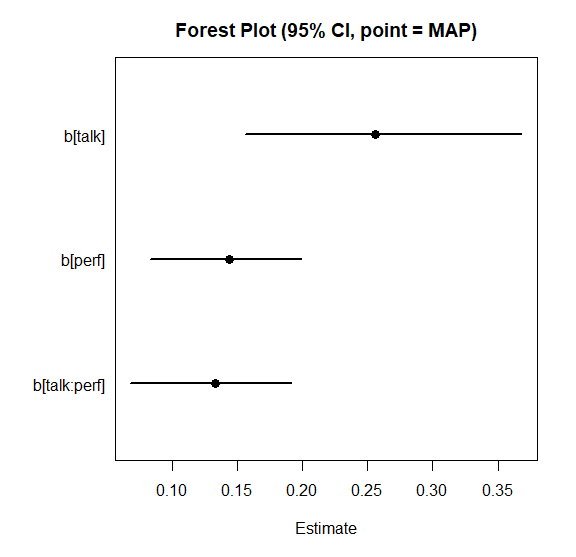
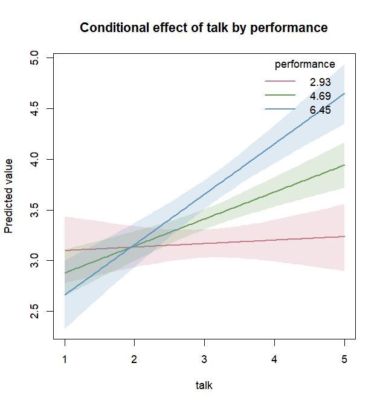

このページの目的
このページでは、BayesRTMB を使い始めるための最小限の流れを確認します。
ここで扱うのは、次の内容です。
-
rtmb_code()で小さなモデルを書く -
rtmb_model()でモデルオブジェクトを作る -
optimize()とsample()で推定する - MCMC の事後分布を可視化する
- ラッパー関数で重回帰と交互作用を扱う
-
classic()による頻度主義的な t 検定を行う - JZS prior と MCMC によって Bayes factor を計算する
詳しいモデルコードの書き方や、混合モデル、GLMM、モデル比較の詳細は、別の vignette で扱います。
0. インストールと環境確認
BayesRTMB は CRAN からインストールできます。
install.packages("BayesRTMB")開発版は GitHub からインストールできます。 pak
を使う場合は、次のようにします。
install.packages("pak")
pak::pak("norimune/BayesRTMB")remotes を使う場合は、次のようにします。
install.packages("remotes")
remotes::install_github("norimune/BayesRTMB")Windows ユーザー向け
BayesRTMB は内部で RTMB / TMB を利用します。 通常利用では、Windows ユーザーも CRAN のバイナリ版をインストールすれば Rtools は不要です。 Rtools が必要になるのは、ソースからインストールする場合、パッケージ開発を行う場合、または通常の TMB のように独自の C++ テンプレートをコンパイルする場合です。
BayesRTMB をソースからインストールする場合は、Rtools が利用できるかどうかを次のコードで確認できます。
pkgbuild::check_build_tools(debug = TRUE)TRUE
が返る、またはビルドツールが利用可能であることが表示されれば、ソースインストールの準備はできています。
Rtools が見つからない場合は、利用している R のバージョンに対応する
Rtools をインストールし、R または RStudio を再起動してください。
1. 最小モデルを書く
まず、もっとも小さな例として二項モデルを書きます。 ここでは、10 回の試行のうち成功が 6 回観測された状況を考えます。
library(BayesRTMB)
Trial <- 10
Y <- 6
dat <- list(Trial = Trial, Y = Y)
code <- rtmb_code(
parameters = {
theta <- Dim(lower = 0, upper = 1)
},
model = {
Y ~ binomial(Trial, theta)
theta ~ beta(1, 1)
}
)parameters ブロックでは推定するパラメータを宣言します。
ここでは成功確率 theta を、0 から 1
の範囲を持つパラメータとして定義しています。
model
ブロックでは、観測データの分布と事前分布を書きます。
Y ~ binomial(Trial, theta) は、成功数 Y
が二項分布に従うことを表しています。
2. モデルオブジェクトを作る
rtmb_model()
にデータとモデルコードを渡すと、推定用のモデルオブジェクトが作られます。
mdl <- rtmb_model(dat, code)## Pre-checking model code...
## Checking RTMB setup...この段階では、まだ推定は行われていません。 mdl
は、モデル定義とデータを保持した RTMB_Model
オブジェクトです。
3. MAP 推定を行う
点推定をすばやく得たいときは、optimize() を使います。
BayesRTMB では、事前分布がある場合は MAP 推定、flat prior
の場合は最尤推定に近い推定として扱えます。
fit_map <- mdl$optimize()
fit_map## Starting RTMB optimization...
##
##
## Call:
## MAP Estimation via RTMB
##
## Negative Log-Posterior: 1.38
## Approx. Log Marginal Likelihood (Laplace): -2.33
##
## Point Estimates and 95% Wald CI:
## variable Estimate Std. Error Lower 95% Upper 95%
## theta 0.60000 0.15492 0.29740 0.84166 この例では、成功確率 theta の推定値はちょうど 0.60
です。
4. MCMC で事後分布を見る
事後分布全体を見たいときは、sample() を使います。
クイックスタートでは短い設定にしていますが、実際の分析ではより多くの反復数を使ってください。
set.seed(1)
fit_mcmc <- mdl$sample(
sampling = 200,
warmup = 200,
chains = 2
)
fit_mcmc$summary()## Starting sequential sampling (chains = 2)...
## chain 1 started...
## chain 1: iter 100 warmup
## chain 1: iter 200 warmup
## chain 1: iter 300 sampling
## chain 1: iter 400 sampling
## chain 2 started...
## chain 2: iter 100 warmup
## chain 2: iter 200 warmup
## chain 2: iter 300 sampling
## chain 2: iter 400 sampling
## variable mean sd map q2.5 q97.5 ess_bulk ess_tail rhat
## lp -3.30 0.69 -2.88 -5.25 -2.80 132 188 1.00
## theta 0.58 0.13 0.60 0.32 0.83 165 177 1.01 MCMC の結果では、平均、標準偏差、事後分位点、ESS、R-hat などを確認できます。 R-hat が 1 に近く、ESS が十分に大きいほど、MCMC の診断としては安心しやすくなります。
MCMC を並列化する場合
通常の MCMC は追加設定なしで実行できます。
ただし、sample(parallel = TRUE) のように MCMC
を並列実行する場合は、追加で future,
future.apply, progressr が必要です。
progressr は、内部で progressr::progressor()
による進捗表示にも使われます。
install.packages(c("future", "future.apply", "progressr"))これらは BayesRTMB の Suggests パッケージなので、並列化を使わない場合は必須ではありません。
fit_mcmc <- mdl$sample(
sampling = 1000,
warmup = 1000,
chains = 4,
parallel = TRUE
)5. MCMC の結果を可視化する
MCMC の結果は、数値だけでなく図でも確認します。 draws()
で対象パラメータのサンプルを取り出し、密度、トレース、自己相関、区間推定を確認できます。
theta_draws <- fit_mcmc$draws("theta")
plot_dens(theta_draws)
plot_trace(theta_draws)
plot_acf(theta_draws)それぞれの図は、次の目的で使います。
-
plot_dens()は、事後分布の形を確認します。 -
plot_trace()は、チェインがよく混ざっているかを確認します。 -
plot_acf()は、自己相関が強すぎないかを確認します。
実際には、たとえば次のような図として確認できます。


6. ラッパー関数で重回帰を行う
標準的な分析では、rtmb_code()
を自分で書かずにラッパー関数から始められます。
ここでは、debate データを使い、満足度 sat
を
talk、perf、およびその交互作用で説明する重回帰モデルを推定します。
data(debate)
mdl_lm <- rtmb_lm(
sat ~ talk * perf,
data = debate,
gmc = "all",
prior = prior_normal()
)
fit_lm <- mdl_lm$optimize(
se_method = "sampling",
num_samples = 1000,
seed = 1
)
fit_lm## Starting RTMB optimization...
##
## Using simulation-based error propagation (1000 samples)...
##
##
## Call:
## MAP Estimation via RTMB
##
## Negative Log-Posterior: 402.24
## Approx. Log Marginal Likelihood (Laplace): -414.02
##
## Point Estimates and 95% Sampling-based CI:
## variable Estimate Std. Error Lower 95% Upper 95%
## Intercept_c 3.43325 0.05232 3.33253 3.53604
## b[talk] 0.26572 0.05305 0.15585 0.36839
## b[perf] 0.14054 0.02924 0.08274 0.19857
## b[talk:perf] 0.13022 0.03063 0.06780 0.19111
## sigma 0.87135 0.03629 0.80181 0.94375
## Intercept 3.41638 0.05254 3.31562 3.51660 係数を一覧したいときは、plot_forest() が便利です。
fit_lm$draws(c("b[talk]", "b[perf]", "b[talk:perf]")) |>
plot_forest(point_estimate = "MAP")
7. 交互作用を図で確認する
交互作用は、係数表だけでは解釈しにくいことがあります。
その場合は、conditional_effects()
を使って予測値を図示します。
ce <- conditional_effects(fit_lm, effect = "talk:perf")
plot(ce)
effect = "talk:perf" と書くと、talk
の効果が perf
の値によってどのように変わるかを確認できます。
より詳しく調べたい場合は、単純傾斜を計算する
simple_effects() も使えます。
simple_effects(fit_lm, effect = "talk:perf")8. t 検定を頻度主義的に行う
BayesRTMB のラッパー関数は、頻度主義的な分析にも使えます。
prior_flat() を使った t 検定に対して classic()
を呼ぶと、通常の t 検定に近い形で結果を表示できます。
mdl_t <- rtmb_ttest(
sat ~ cond,
data = debate,
prior = prior_flat()
)
fit_t_classic <- mdl_t$classic()
fit_t_classic## Pre-checking model code...
## Checking RTMB setup...
## Starting RTMB optimization...
##
##
## Call:
## Classical estimation via ttest
##
## Log-Likelihood: -421.320, AIC: 848.640, BIC: 842.640
##
## Point Estimates and Confidence Intervals:
## Estimate Std. Error Lower 95% Upper 95% df t value Pr
## diff -0.37333 0.11297 -0.59564 -0.15102 298 -3.30484 .00107 **
## delta -0.38161 0.11652 -0.61092 -0.15230 298 NA
## total_mean 3.43333 0.05648 3.32218 3.54449 298 NA
## sd 0.97831 0.04007 0.90254 1.06044 298 NA
## mean0 3.24667 0.07988 3.08947 3.40386 298 NA
## mean1 3.62000 0.07988 3.46280 3.77720 298 NAここでは、diff が2群の平均差、delta
が標準化効果量を表します。 classic() は、BayesRTMB
のモデルを頻度主義的な推定として確認したいときに使えます。
9. JZS prior で Bayes factor を計算する
同じ t 検定でも、JZS prior を使うと、効果量 delta に
Cauchy 事前分布を置いた Bayes factor を計算できます。
mdl_t_jzs <- rtmb_ttest(
sat ~ cond,
data = debate,
prior = prior_jzs()
)
set.seed(2)
fit_t_jzs <- mdl_t_jzs$sample()
bf <- fit_t_jzs$bayes_factor(fixed = list(delta = 0))
bf## --- Bayes Factor Analysis (Bridge Sampling) ---
## Bayes Factor (BF12) : 21.4323
## Log Bayes Factor : 3.0649 (Approx. Error = 0.0022)
## Evidence : Strong evidence for Model 1
## Comparison model : Parameters fixed at list(delta = 0) fixed = list(delta = 0) は、効果量を 0
に固定した帰無モデルと比較する指定です。
この例では、Model 1、つまり効果量を推定するモデルのほうが支持されています。
実際の分析では、Bayes factor の安定性を確認するために、ここで示した例よりも多い MCMC サンプル数を使うことをおすすめします。
次に読むページ
このページでは、BayesRTMB の入口だけを扱いました。 目的に応じて、次のページに進んでください。
ラッパー関数の使い方
回帰、GLM、混合モデル、t 検定、相関、因子分析、IRT など、標準的な分析をラッパー関数で行う方法を確認できます。階層モデル・GLMM・分散分析
rtmb_glmer()を使った階層モデル、GLMM、残差相関、条件付き効果の可視化を詳しく確認できます。モデルコードの書き方
rtmb_code()のsetup,parameters,transform,model,generateを使って、独自モデルを書く方法を学べます。RTMB の仕組みと推定アルゴリズム
MAP 推定、Laplace 近似、MCMC、変分推論などの内部処理を確認できます。